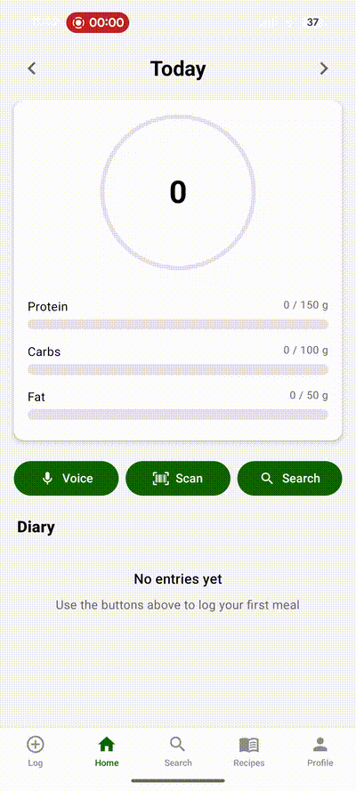

The fourth version of Macros for Humans has no app
This weekend Macros for Humans got its first paying subscriber who is not a member of my family.
The product has been written in React Native, Flutter, React Native again, and React on the web. An Android version made it all the way to Google Play. The version somebody finally paid me for is the first version with no downloadable app at all.
If I could send a technical write-up back to myself twelve months ago, this is the one I would send.
I kept rebuilding the wrong part
In July 2025, the first repository described the project as a voice-powered macro tracker. It had a FastAPI backend, PostgreSQL, JWT authentication, and a React Native client built with Expo. I constrained the MVP to Android because, in theory, that would let me iterate faster.
By September I had converted the mobile client to Flutter. That version grew real audio recording, Whisper transcription, streaming ingredient extraction, Firebase authentication, and then a migration from Firebase to Supabase. In November I rewrote the client in React Native and Expo again. I added text input, recipe support, barcode scanning, Google Play billing, and an Android release pipeline.
In January 2026 I took another run at the shape of the product as a React web application. This version had FastAPI, Supabase, Postgres, pgvector, BAML, barcode scanning, nutrition-label parsing, photo estimation, dashboards, charts, OAuth, Sentry, and a technical specification long enough to make a procurement department proud.
None of these were toy implementations. The core nutrition pipeline worked. I had built something that could accept unstructured food descriptions, extract ingredients, search the USDA FoodData Central database, re-rank the results with an LLM, and return a reasonably accurate meal.
I even wrote about that architecture in 2025. The old post is worth keeping around because it shows exactly where my head was:

The pipeline was clever. It was also optimizing the middle of a workflow whose beginning and end were still too expensive.
I could make the search ten times faster and still require the user to install an app, sign in, open it at the right time, understand my navigation, review a set of cards, and press a confirmation button. Every new capability created another interface problem. Recipes needed screens. Corrections needed edit controls. Photo estimates needed badges and confidence indicators. History needed a calendar and filters. Settings needed settings.
I was building a better logging app for somebody whose real problem was having to use a logging app.
The interface decision came first
The current version started with a much more aggressive constraint: the primary product would be a standard SMS conversation.
Not an app that sends SMS notifications. Not a dashboard with a chat widget. The user would text a phone number, and the useful part of the product would happen inside that thread.
This immediately deleted an enormous amount of product surface area. There is no client state to synchronize, mobile release to shepherd through an app store, navigation hierarchy to invent, or bespoke composer to maintain. Text, photos, corrections, and questions all arrive through the same interface. The user's phone number is already a useful identity claim once it has been verified during signup.
It also deleted a bunch of things users reasonably expect from a full application. SMS is bad at charts. It does not have structured editing controls. I cannot stream a beautiful intermediate UI while the model works. Searchable history is whatever the user's texting app provides. Carrier rules and compliance are real engineering work. Standard SMS is not end-to-end encrypted.
Those are not footnotes. If the main value of Macros for Humans were a rich analytics dashboard, SMS would be the wrong choice. I decided the main value is making the capture step so cheap that people continue to do it. A dashboard full of perfect charts is useless if logging dinner felt annoying enough that the data never arrived.
Once I made that decision, the backend architecture became a much easier problem to reason about.
Why Durable Objects fit the problem
An SMS-native product is an event processor. Messages can arrive close together. Twilio can retry webhooks. Photos arrive as provider-hosted media. The model may take longer to respond than the webhook deadline. A correction like “actually, that was 200 grams” only makes sense in the context of the user's recent messages and current food log.
The system needs a durable identity, ordered processing, transactional state, and enough memory to behave like one continuing conversation.
A Cloudflare Durable Object gives me a small stateful server whose identity is a string. Macros for Humans creates one UserAgent object per user by naming it with the internal user ID. Calls for that ID are routed to the same logical object, and the object owns its own SQLite database.
That is a remarkably good primitive for this product. Instead of building a shared job queue, distributed locks, a central Postgres database, and a coordination layer to prevent two messages from changing the same diary at once, I route every event for one user to one object. Durable Objects process events serially, so each user gets an actor-like boundary around their conversation and data.
I still have shared services. An authentication Durable Object maps verified phone numbers to internal user IDs and stores subscription state. A rate-limit object protects shared entry points. Cloudflare Analytics Engine collects app-level metrics. The important nutrition state, however, belongs to the user's object.
Following one text through the system
When somebody texts Macros for Humans, Twilio sends an HTTP request to a Cloudflare Worker. The Worker verifies Twilio's signature, resolves the sender's phone number to an enrolled user, and checks that the user has an active trial or subscription.
If the text includes a photo, the Worker downloads it into R2 under a prefix owned by that user. It then makes a best-effort deletion of Twilio's copy. This gives the application control of the media and avoids paying a communication provider to remain the accidental long-term file store.
The Worker gets the Durable Object named for the user and calls enqueue. Inside the object, the message is inserted into an inbox SQLite table. Twilio's MessageSid is unique, so a webhook retry does not log lunch twice. The object arms an alarm and the HTTP handler immediately returns empty TwiML.
The immediate return matters. Model calls and nutrition lookups can take longer than Twilio will wait for a webhook response. The acknowledgement path should not be held hostage by the useful-work path.
When the alarm fires, the object drains its inbox in arrival order. It processes no more than ten messages per alarm, re-arming itself if work remains. Only one turn runs at a time for the user. If somebody sends “two eggs,” then a second later sends “and toast,” I do not need a distributed locking strategy to stop both turns from racing to update today's totals.
The agent runs, uses its tools, persists the new user, assistant, and tool messages for an audit trail, and sends the final reply through Twilio's outbound API. The web request and the agent turn are completely decoupled, but the state transition remains local to one user.
A little database per person
Each user object's SQLite database contains boring tables: an inbox, daily sessions, messages, macro targets, a food log, weights, profile values, recipes, and recipe ingredients. Boring is a compliment. Calories and grams are facts the application needs to query and change deterministically. They should not exist only inside a model transcript.
Photos and small user files live in R2 under the user's prefix. One of those files is memory.md, which holds durable preferences and context that do not belong in a rigid nutrition table: goals, recurring habits, or other information the user asks the system to remember.
This split gives the model three different kinds of memory:
- The current day's compacted conversation, for “that was two servings” and other conversational references.
- SQLite, for authoritative logs, recipes, targets, measurements, and calculations.
memory.md, for durable human context that should survive beyond today's thread.
On each turn, the agent is rebuilt from the current day's user and assistant messages. Historical tool results are not replayed. They are valuable audit data, but terrible conversational context: large, repetitive, and potentially stale. Images become R2 references in replay instead of being sent to the model over and over. If the agent needs an explicit recent-message lookup, it has a tool that returns a small sanitized view.
This is one of the most important choices in the system. The transcript is context. It is not the source of truth.
The agent gets capabilities, not a workflow
The earlier application had an explicit pipeline: extract ingredients, search, re-rank, render a confirmation UI, save. That was easy to draw and increasingly difficult to extend. A correction, recipe, label photo, weight entry, or “what should I eat for dinner?” question all wanted a slightly different branch of the pipeline.
The current system gives the model a small collection of capabilities. It can search USDA FoodData Central, query or update the user's SQLite database, atomically save a recipe, retrieve sanitized recent messages, and read or edit the user's memory file. Web search is available after the USDA database fails to produce a trustworthy result.
The model decides which capabilities to use based on the message. The tools, database, and prompt define the boundaries.
I am deliberately using the model for the work it is good at: interpreting “a big handful,” reading a nutrition label, understanding that “actually” means correction rather than duplication, choosing a plausible generic USDA result, and asking one useful follow-up when the missing information actually matters.
I am not asking it to remember today's calorie total in prose or perform nutrition accounting from vibes. Food rows are stored in SQLite. Totals are SQL sums. Recipe scaling is persisted as structured data. USDA and readable labels are preferred over the model's internal knowledge. Estimates are marked as estimates.
The broadest capability is a SQL tool with full read and write access to the user's database. Normally, giving an agent raw SQL should make you sit up a little straighter. Here it is a conscious tradeoff. The database is isolated inside one user's Durable Object, the schema is small, and every turn and tool call is logged. A bad query can still damage that user's data, which deserves testing and safeguards, but it cannot accidentally update every customer's food log with one missing WHERE clause.
The per-user architecture does useful security work by reducing the blast radius before the prompt ever enters the picture.
What Durable Objects do not solve
This architecture is not a free stateful-computing lunch.
Cross-user queries are awkward because the useful data is intentionally scattered across many SQLite databases. I cannot casually connect a BI tool and run GROUP BY user_id. Product metrics need an explicit analytics path that does not leak raw message content. Administrative operations have to resolve and call the correct object.
Schema migrations also require a different mental model. A user's database wakes independently, so migrations must be idempotent and safe to run at object startup. I keep a schema version in each object and use CREATE TABLE IF NOT EXISTS plus compatibility migrations. There is no single maintenance window where every user database upgrades in one grand ceremony.
A single object is not designed for massive parallel throughput. That would be a problem for a shared firehose. It is fine for a human sending a few meal texts. The boundary works because the natural concurrency unit of the product is one person.
There is also obvious Cloudflare coupling. The Worker, Durable Object RPC, SQLite storage, alarms, R2, service bindings, and analytics layer fit together because they come from the same platform. I could move the application, but I would be rewriting the coordination model rather than changing a database connection string.
I accept that trade because the platform lets one developer operate a stateful, event-driven product without pretending to be a small infrastructure team.
The boring parts are still the product
The agent loop is the fun part to explain. Shipping the SMS product required plenty of work that has nothing to do with model intelligence.
Webhook signatures have to be verified. Messages have to be idempotent. Media has to be copied and cleaned up. Replies need to stay short and plain because Markdown tables are not especially impressive over SMS. Authentication, phone verification, STOP and HELP behavior, privacy language, trials, Stripe webhooks, error messages, and carrier compliance all matter.
The product also needs observability that is useful without casually shipping private meal descriptions into every log line. Turns receive stable IDs. Message bodies and phone numbers are hashed for correlation. I record queue delay, model latency, tool names, token usage, cost, media count, reply length, and failure fields. Cloudflare's AI Gateway provides another view into model calls.
A model can reason brilliantly about a photograph of chicken and rice, but if a Twilio retry creates two dinners or the webhook times out before acknowledgement, the user experiences a broken calorie tracker.
What I would tell myself last July
I do not regret building the earlier versions. They taught me which parts of the nutrition problem were real. The USDA search work, structured extraction, re-ranking, recipes, labels, and photo estimation all survived conceptually. The interfaces did not.
I would tell myself to prototype the interaction model before committing to a platform. React Native versus Flutter was never the important argument. I could have won that argument three times and still built the wrong product.
I would say that an agent should not become the database just because it can hold a long conversation. Let the model interpret messy human input. Let deterministic systems own facts, arithmetic, identity, billing, and event ordering.
I would say to choose an isolation boundary that matches the domain. One stateful object per user made concurrency, storage, tool scope, and failure containment easier to think about at the same time. That is rare enough to pay attention to.
I would say not to build the dashboard until somebody asks for a dashboard. The current version briefly grew one, along with generated widgets and API keys. I deleted it. There may eventually be a thin read-only ledger for history and trends, but it should earn its way back into the product instead of arriving automatically because that is what SaaS applications are supposed to have.
Finally, I would tell myself to charge sooner. Family members and personal dogfooding are generous but noisy signals. One person I do not know paying $5 is a tiny data point. It is still the cleanest data point the project has produced.
Launching the version without the app
Macros for Humans is now live with a seven-day free trial, then $5 per month or $50 per year. You can text exact measurements, descriptions, photos, labels, recipes, corrections, and questions. The product tries to preserve precision when you have it and keep the habit alive when you do not.
You can read the non-technical launch announcement or try Macros for Humans.
My twelve-month product roadmap turned out to be deleting the app. It was a pretty productive year.
Questions about the architecture are welcome at john@ouachitalabs.com.